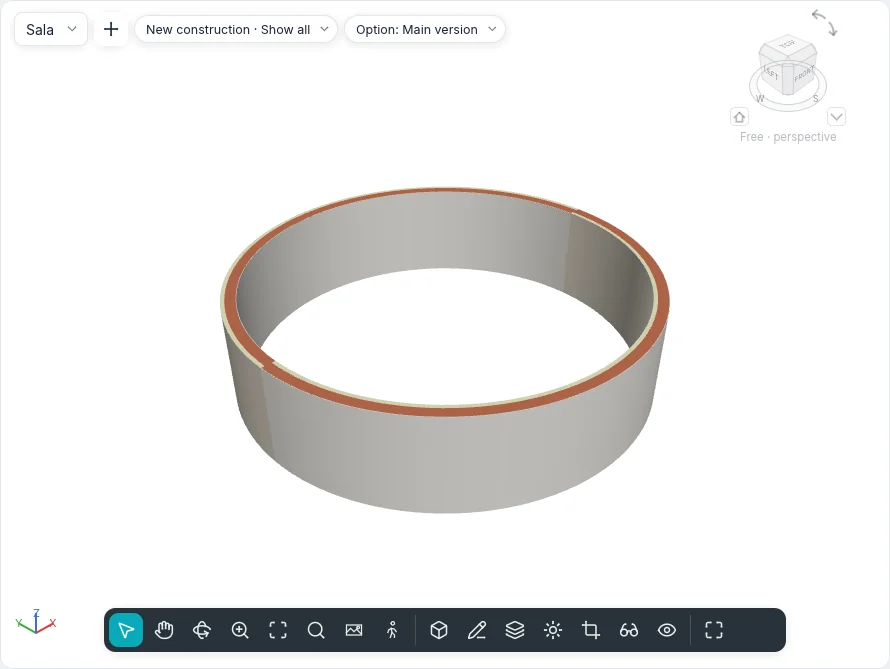

Ceilings and columns
Ceilings are made in a ceiling plan, the view that looks up from its cut plane. Columns and structural columns are placed with a click, in plans and in 3D views.

Ceilings
Model ▸ Build ▸ Ceiling works in a ceiling plan. Started in another view, Go to View offers the ceiling plans of the project: the tool never changes the view by itself.
The contextual card Place Ceiling has the Ceiling group:
| Tool | How it works |
|---|---|
| Automatic Ceiling | The default. Move the cursor inside a room closed by walls: the region is lit; click to make the ceiling there. Its outline follows the faces of the walls; room separation lines do not bound a ceiling |
| Sketch Ceiling | Opens sketch mode (Create Ceiling Boundary), with the Draw group of floors: lines, rectangles, polygons, true arcs, Pick Walls, Pick Lines and Slope Arrow. A closed loop inside the outline is an opening. Finish Edit Mode makes the ceiling |
The options strip sets the Height Offset From Level of the next ceiling (2.60 m in a new project) and whether it is Room Bounding.
A selected ceiling shows Edit Boundary, which opens its sketch again.
Types
The type selector lists two groups:
- Basic Ceiling: no thickness, only its material, whose pattern is drawn on it (Generic);
- Compound Ceiling: layers from the top down, edited in Type layers as those of walls and floors (Plasterboard 12.5 on frame, Panels 600 × 600). Its bottom layer is what is seen from below.
The ceiling grid
The model pattern of the material seen from below is the ceiling grid: Mineral panel
600x600 has a 600 × 600 grid. It is drawn in the ceiling plan and in 3D views, and a new
ceiling's grid is centred in its outline, so that the border panels on opposite sides are the
same. The command ceilinggrid moves the grid (origin, by), turns it (angle) or centres it
again (centre).
Properties
| Property | Meaning |
|---|---|
| Level | The level the ceiling belongs to |
| Height Offset From Level | The height of its underside above the level |
| Room Bounding | Whether rooms below end at the ceiling |
| Slope | The slope, for a ceiling sloped by a line or an arrow |
| Thickness, Perimeter, Area, Volume | Read-only |
Ceiling plans
A ceiling plan shows the level from below, the same way round as its floor plan so that the two lie one over the other: the walls, columns and curtain walls its cut plane meets (2.30 m, over doors and windows, so a wall is whole above them), the ceilings with their grids, the grids and the view's own annotations.
- Views ▸ Create ▸ Plan ▾ ▸ Ceiling plan opens New Plan with Type set to ceiling plans: pick the levels; with Do not duplicate existing views a level that has one is not offered.
- A new level gets its ceiling plan when Ceiling Plan is ticked in Plan View Types, on the options strip of Level.
- In the Project Index the ceiling plans have their own branch, Ceiling plans. A ceiling plan has its level's name; its window title, and the command line, call it Ceiling plan: Ground floor.
In floor plans ceilings are not drawn: they are above the cut plane. In sections they are cut with
their layers; in 3D views they are solids, one per layer. Walls can be attached to the underside
of a ceiling with Link Top/Base. Ceilings are listed in schedules and material takeoffs, and
exported to IFC as IfcCovering of type CEILING.
Columns and structural columns
Model ▸ Build ▸ Column ▾ offers Architectural column and Structural column; Structure ▸ Structural elements ▸ Structural column starts the second directly. Both work in plans and in 3D views (on the level under the cursor).
- Click to place it. Its temporary dimensions measure to the nearest references; type a value to place it at that distance.
- The space bar aligns it to the grids that cross under the cursor, or turns it by 90°.
- The options strip: Rotate after inserting (it is then selected and turned with Rotate), Height or Depth, the level it reaches or Unconnected with a height, and Room Bounding.
A structural column also goes on several places at once, from the Multiple group:
- At Grids: click the grids (again to leave one out); a structural column waits at each of their intersections; End or Enter places them;
- At Columns: click the architectural columns; one goes at the centre of each.
A structural column placed on two grids takes its Column Location Mark from them (A-2) and, with Moves With Grids, follows them when they move.
How they are drawn
- In plans a column cut by the cut plane is filled as a cut element: with its material's cut pattern, or with its type's low-detail pattern. A structural column keeps its whole outline; an architectural column inside a wall merges with it, and its outline shows only where it stands out of the wall.
- Below the cut plane a column is drawn in projection.
- In 3D views a round column is smooth, with no lines along its side.
- A Room Bounding column makes an island in the room around it, or a notch where it stands against a wall.
Link Top/Base and Unlink Top/Base, with columns selected, attach their top to a floor, roof, ceiling or reference plane above, or their base to a floor below, as for walls.
With columns or pillars selected the options bar shows Attach column: with Top or Base, and three options: Attachment style (Cut column: the column stops at the element's face and follows its slope; Cut target: the column stays flat and a roof or floor it passes right through loses its section; Do not cut: they overlap), Attachment justification (Minimum intersection, Intersect column midline, Maximum intersection: where the section meets a sloped element) and Offset from attachment (up when positive). In Properties, under Constraints, Top justification, Top attachment offset, Base justification and Base attachment offset can be changed while that end is attached. Unlink Top/Base and a click on the element detach from that one only; Detach All from all.
An architectural column placed in a wall or against its face joins the wall: the wall's core material fills it, the layers outside the core wrap round the sides that stand out, no line runs between them, and at low detail it takes the wall's coarse pattern; at the corner of two walls it joins the one it overlaps most. A structural column always keeps its own material and cuts the wall it stands in: the wall loses its section in plan, section and 3D (over the pillar's height only), and the wall's area and volume, schedules included, are less by it. Moving the wall or the column works the join out again.
Types
Columns have our own parametric sections, rectangular (Width and Depth; a structural
column's b and h) or circular (Diameter), with a material: Rectangular column 400 ×
400, Round column Ø 300, Reinforced concrete column 300 × 300, 300 × 500 and Round
reinforced concrete column Ø 400. Columns and structural columns are exported to IFC as
IfcColumn.